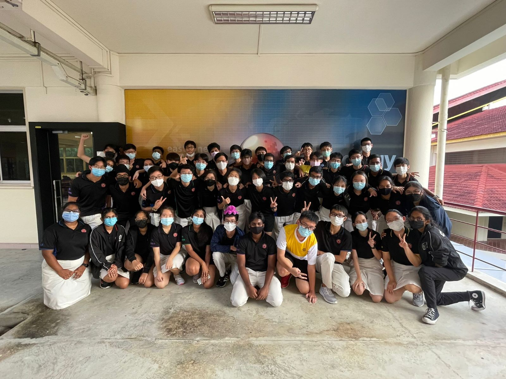
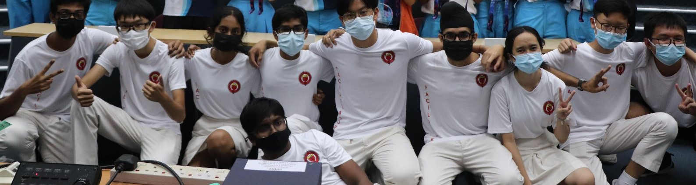
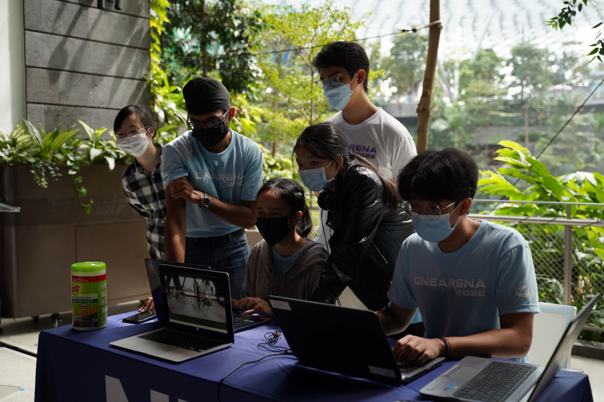
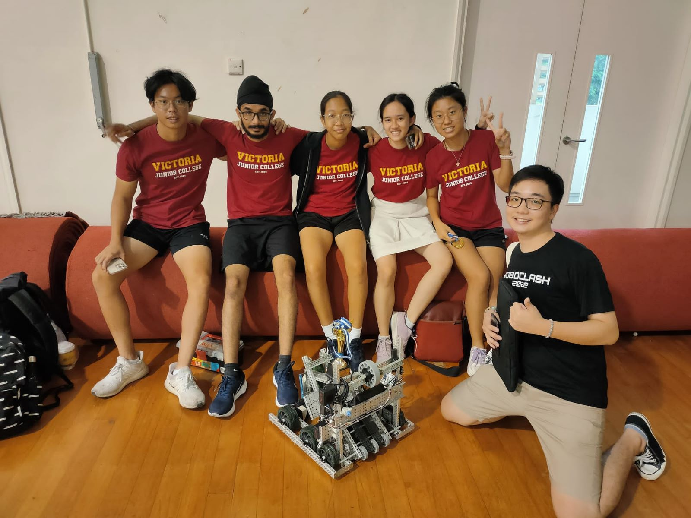
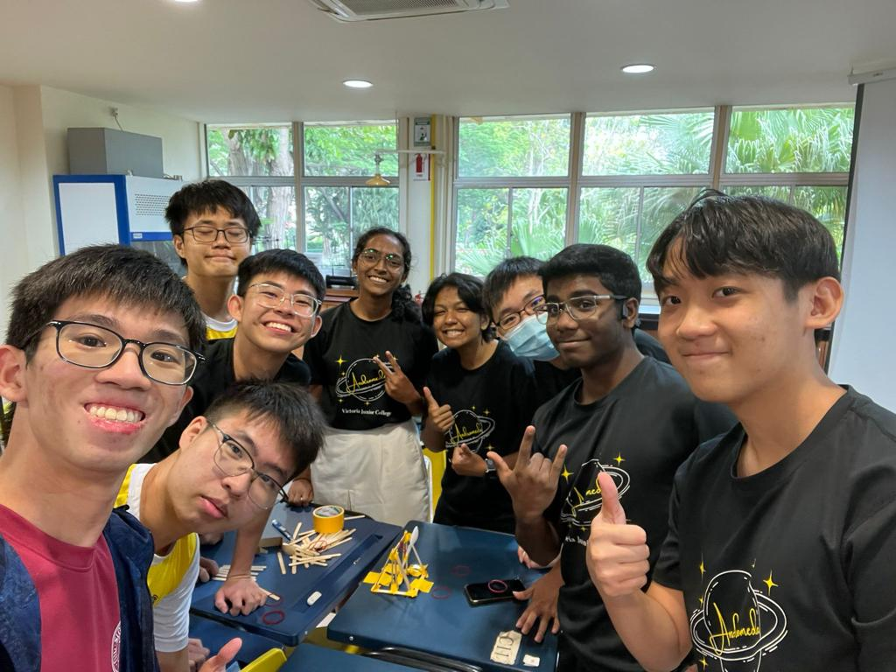
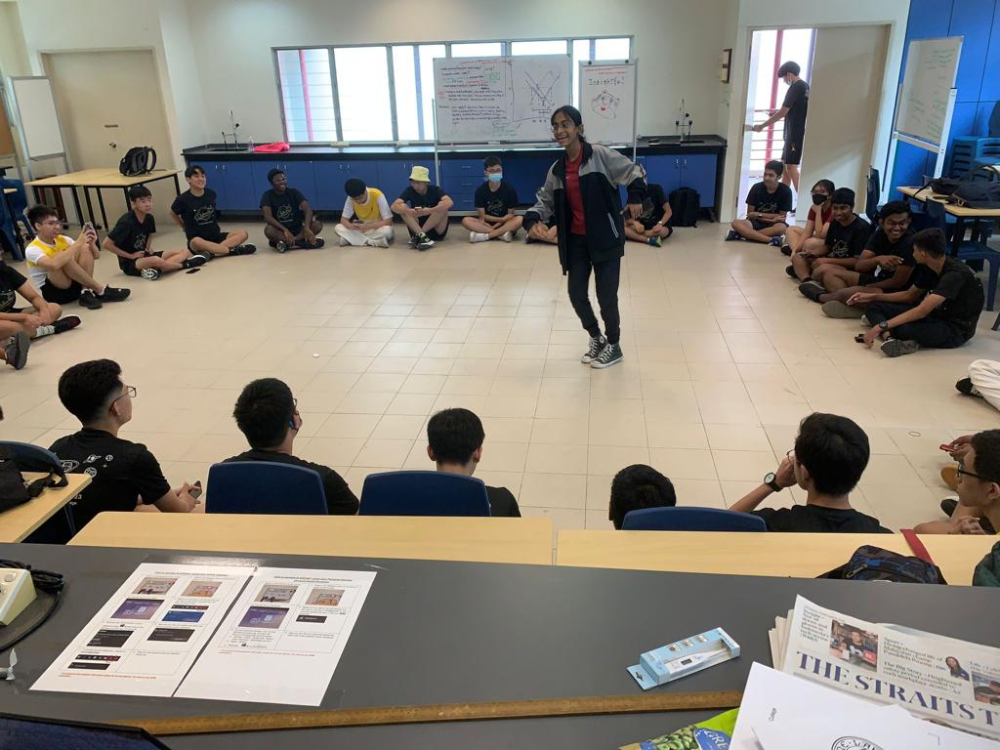
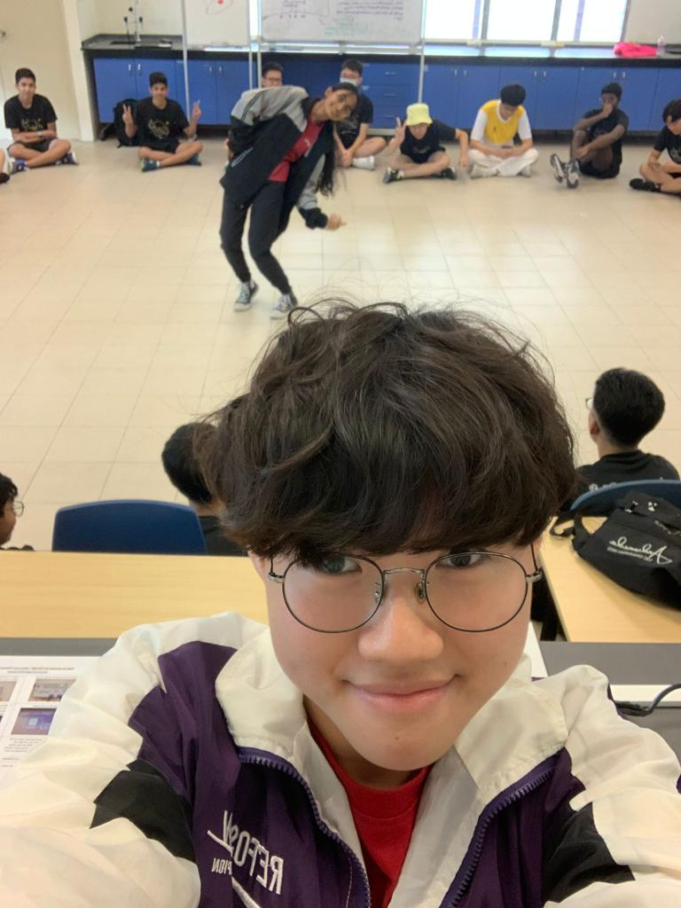
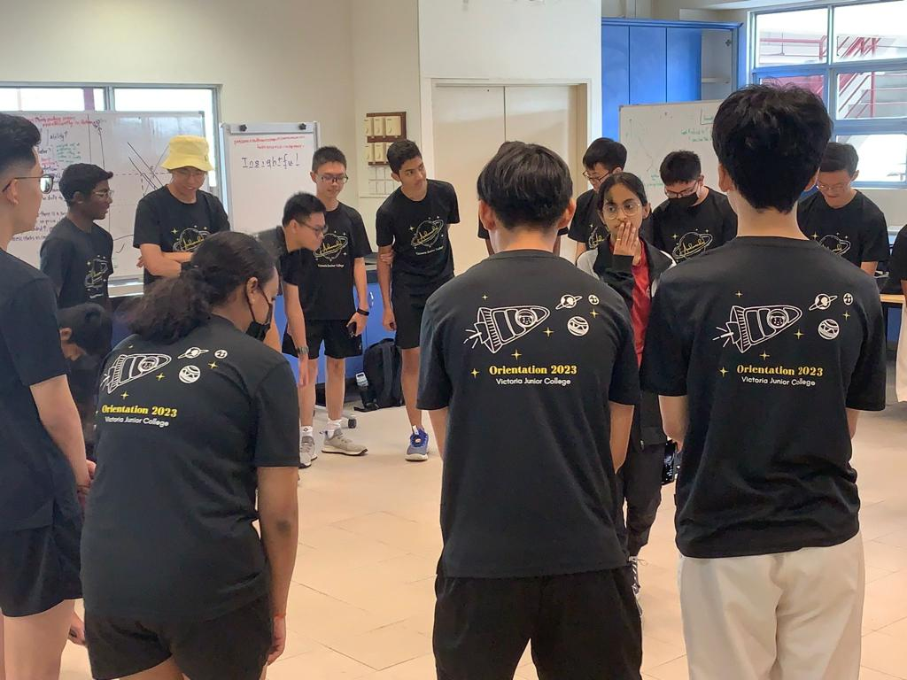
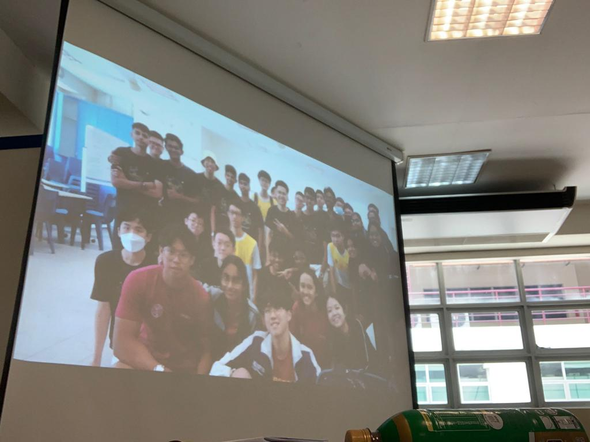
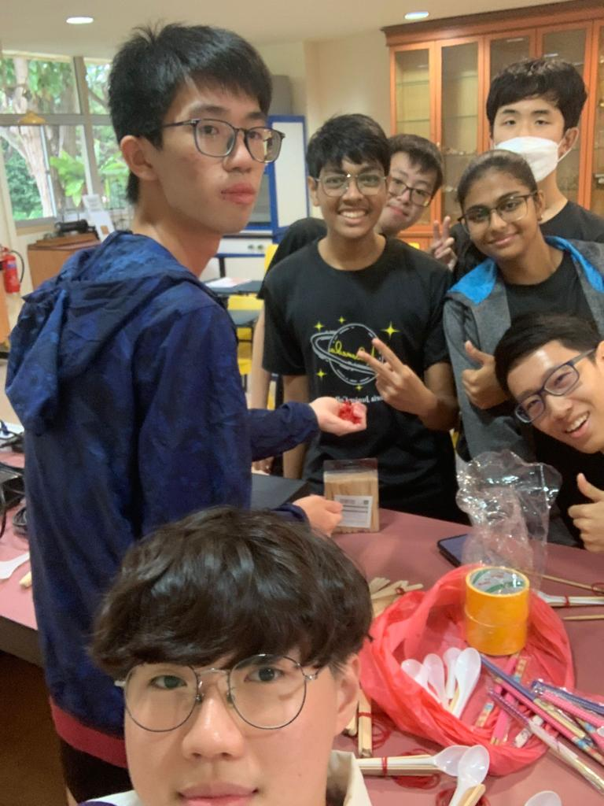

“I wish upon you all a future filled with success(academic or not), joy and endless possibilities! Best of luck for A levels!!!”
Dear J2s, thank you for being there as all of you are our pillars of support. Yall are kind souls that make us feel less pressured whenever we have cca. I will definitely miss yall and I promise you that I will not let you down and bring this cca to greater heights
Hey seniors,
Thanks for guiding us throughout these few months, especially the EXCO who led us through the job testing and handover process. All the best for your A-levels!
~ Dylan K
Dear seniors😎, thank you for creating a fun and memorable VRMC experience for us!🥰 I wish y’all good luck for A Levels! 🥳
“luv y’all beautiful human beings”
dear sir/madam thank you for being my j2
i hope you are healthy and happy studying!
do well for test and you shall be rewarded with hapiness
remember to eat healthily and exercise regularly
Dear seniors, I wish you all good luck for A levels. Thank you for teaching us and helping us integrate into the CCA.
Good luck with your upcoming National examinations! It was fun meeting you!
J2s, we are extremely grateful for your contributions and mentorship. We hope you've had a lot of fun during your time in VRMC. All the best for Prelims and As!
J2s, thanks for all the hard work you've put into VRMC! All the best for your A's!!!
அக்கா நீ நல்ல இரு அக்கா மகிழ்ச்சியாக இருங்கள் அக்கா எழுதியவர் ஸ்ரீ
 karthik dont worry be happy
- sri
Karthik you're the best spec head we could have asked for! Thanks so much for all your arduino wisdom and ATB FOR A LEVELS!!
Thank you for your unwavering contributions to the cca to bring vrmc to great heights today. Wishing you all the best in your future endeavours... 🙏🏻🙏🏻🙏🏻
Good luck for your A levels, Karthik! You have been very patient in explaining arduino stuff to us, and I really appreciate that :)
Karthik you’re so cracked wish you the best in your future endeavours
i love karthik no homo atb for A lvls and i hope you enjoyed teaching us arduino related stuff
